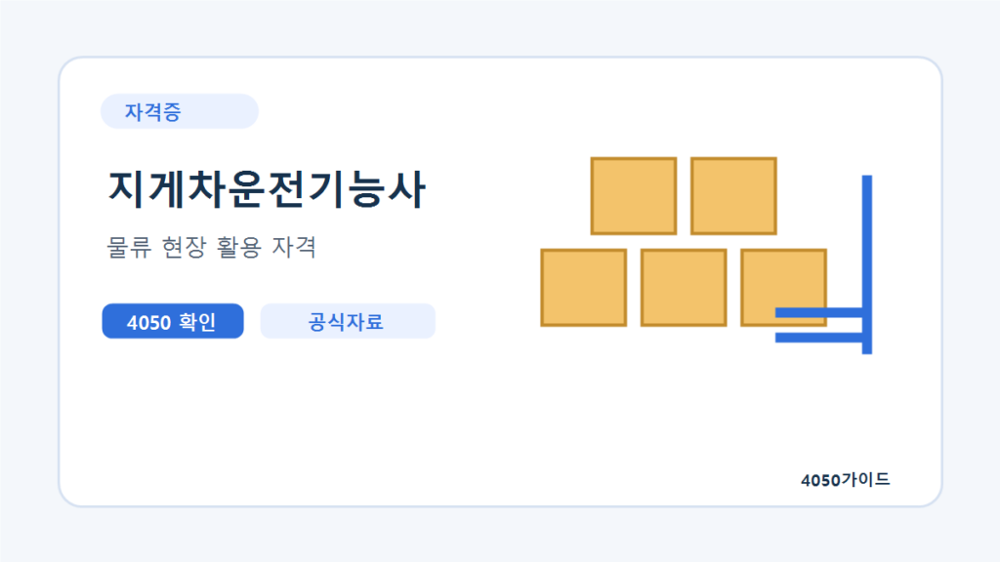

상시검정 자격증 선택 가이드 지게차 조리 미용 준비 기준
상시검정이라는 이름은 아무 날이나 시험을 볼 수 있다는 뜻이 아닙니다. 원하는 종목의 운영 일정과 실습 조건을 확인하고, 취득 후 어떤 업무에 지원할지 먼저 비교하세요.
상시검정은 회차와 시험장 운영을 확인해야 합니다
Q-Net의 상시시험 안내는 필기와 실기를 나누고 시행회차, 접수와 시험·발표 일정을 확인하도록 구성되어 있습니다. 연간 일정이나 한 회차를 봤다고 모든 지역의 자리가 확보되는 것은 아닙니다. 실제 원서접수에서 원하는 종목과 지역의 가능 여부를 확인하세요.
이 글은 특정 날짜의 잔여석 안내나 올해 전체 종목을 확정한 목록이 아닙니다. 관심 종목의 상시 운영 여부와 최신 시행계획은 Q-Net에서 확인해야 합니다. 준비 계획은 시험 접수와 연습 시간을 따로 적는 방식으로 세워보세요.
분야마다 다른 실습 조건을 비교하세요
| 관심 분야 | 교육 전에 볼 조건 | 취업 업무에서 물어볼 것 |
|---|---|---|
| 지게차 | 장비 사용 시간·안전 교육·실습 동선 | 다룰 장비와 추가 면허 등 요건 |
| 조리 | 작업 공간·재료·개인 연습 가능 여부 | 급식·주방의 실제 업무와 근무시간 |
| 미용 | 도구·재료·작업 반복 연습 | 자격 외 현장 기술과 경력 요구 |
표의 분야는 선택 기준을 설명하는 예시입니다. 종목별 시험의 정확한 과제, 준비물과 허용 장비는 공식 공개문제와 수험자 안내를 확인하세요. 학원에서 쓰는 장비가 시험장의 조건과 같다고 가정하지 마세요.
첫 종목은 실습을 지속할 수 있는지로 좁혀보세요
독학 가능 여부를 남의 합격 후기만으로 판단하지 마세요. 필기 학습과 작업형 연습은 필요한 환경이 다릅니다. 장비·재료를 사용할 수 있는 장소, 반복 연습 시간과 통학 부담을 적어보세요. 자격 시험 비용만 계산하면 실제 준비 지출을 놓칠 수 있습니다.
교육기관에 ‘수업에서 직접 작업하는 시간이 얼마인가요?’, ‘별도 연습을 신청할 수 있나요?’, ‘재료와 도구 비용은 포함되어 있나요?’를 물어보세요. 지원이 가능하다면 국비훈련 과정 비교 안내도 함께 읽을 수 있습니다.
필기 실기 접수와 결과 날짜를 구분하세요
필기 접수, 시험과 결과 확인 이후 실기 접수 가능 시점을 차례로 확인합니다. 면제 관련 조건이 있다면 본인에게 해당하는지 별도로 알아보세요. 인터넷에서 본 지난 회차를 이번 계획에 그대로 복사하지 마세요. 접수 화면과 현재 공지의 날짜가 기준입니다.
수업 일정과 시험 날짜가 겹치면 변경이 가능한지 기관에 문의합니다. 임의로 시험장을 바꾸거나 취소하면 원하는 조건이 유지된다고 단정할 수 없습니다. 환불과 일정 변경은 해당 접수의 공식 안내를 읽고 진행해야 합니다.
시험 준비와 취업 요건은 같은 목록이 아닙니다
필기에 합격하거나 실습을 수료한 상태를 최종 자격 취득으로 적지 마세요. 자격을 취득한 후에도 실제 작업에 필요한 면허·교육·경력이 있는지는 업무별로 확인해야 합니다. 특히 장비를 운전하거나 독립 작업을 맡는 공고는 요구 조건과 담당 범위를 정확히 물어보세요.
지원할 공고를 먼저 모아 어떤 작업과 근무 형태가 반복되는지 봅니다. 자격증이 등장한다는 사실만으로 누구나 채용되거나 같은 급여를 받는 것은 아닙니다. 자신의 통근 범위와 가능한 시간 안에서 지원할 공고가 있는지 비교해야 합니다.
신청 직전 확인하는 계획표
- 정확한 종목명과 현재 시행 공지를 확인합니다.
- 접수·시험·결과 날짜를 구분해 적습니다.
- 필기와 실기의 준비 시간 및 장소를 확보합니다.
- 도구·재료·교육·접수 비용을 분리합니다.
- 취득 후 지원할 업무와 별도 요건을 다시 확인합니다.
한 번에 여러 종목을 계획하면 연습 시간과 비용이 겹칠 수 있습니다. 첫 종목의 실습을 실제로 지속할 수 있는지 확인한 다음 추가 선택을 검토하세요. 시험 일정이 많다는 이유만으로 가장 빠르게 취업할 수 있다고 결론 내리지 마세요.
자주 묻는 질문
상시검정이면 매일 접수할 수 있나요?
시행회차와 접수 기간, 시험장 운영을 확인해야 합니다.
학원 수료와 자격 취득은 같나요?
수료와 시험 합격·자격 취득은 구분됩니다. 공식 취득 조건을 확인하세요.
자격증만 있으면 현장의 모든 작업이 가능한가요?
실제 업무에 필요한 면허·교육·경력 등 추가 조건을 확인해야 합니다.
공식 자료와 확인일
2026년 10월 6일 확인한 자료와 편집자의 준비 제안을 구분해 정리했습니다. 개인별 계약·지원 자격·처리 결과는 해당 기관에서 확인하세요.